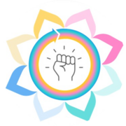

A
Signalform, corrected
The closest to the reference layout: mosaic hero, large condensed black headings, warm neutrals and a single teal accent.
Open mockup →
POWERSHIFTSeven design directions for the POWERSHIFT website. Every mockup uses the same draft content, which the team will revise, and the same structure: a single long page where each “Learn more” opens in place.
Photos, portraits, logos and the Theory of Change figure are placeholders until the team supplies them.
The closest to the reference layout: mosaic hero, large condensed black headings, warm neutrals and a single teal accent.
Open mockup →One blue ink on raw paper: stencil headings, dotted rules, halftone images and hand-drawn arrows.
Open mockup →Direction B printed in four risograph inks: blue, fluorescent pink, yellow and their orange overprint. Bands of geometric shapes separate the sections.
Open mockup →Editorial and scientific: serif headings, text in columns, fine rules, deep green bands and a magenta accent.
Open mockup →Direction C set in the typeface of A, with warmer colours. Three palettes to compare; a switcher in the bottom corner changes the palette on the page.
Lou’s two mockups rebuilt as web pages with the full content. The “Who decides? Whose knowledge counts?” banner from the originals is replaced by the framework section.
A research notebook: spiral binding, stamped blue headings, highlighter, taped photos and torn paper cards.
Open mockup →Painted bands in pink, yellow and cyan, slab-serif headings and coloured number badges.
Open mockup →